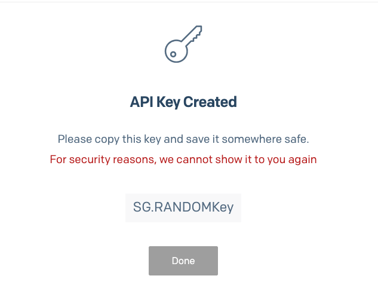

Moduł 6 - Zajęcia 10 - Praca z e-mail i Docker
1.1 Pakiet Nodemailer
1.2 Informacje ogólne
Nodemailer to moduł bez dodatkowych zależności dla Node.js, przeznaczony do wysyłania
e-maili. Pozwala on na:
- niezależność od platformy wysyłki maili;
-
zapewnia bezpieczeństwo, w szczególności przy dostarczaniu poczty elektronicznej z
uwierzytelnieniem TLS / STARTTLS i DKIM;
- Wspiera Unicode w wiadomościach;
- Pozwala tworzyć maile z wykorzystaniem HTML;
- Obsługuje różne metody transportowe, nie tylko najpopularniejsze SMTP.
Paczkę Nodemailer należy najpierw zainstalować ponieważ nie jest modułem core
npm install nodemailer
Nodemailer oferuje gotowe wbudowane metody transportu wiadomości:
- metoda sendMail, idealne do wysyłania prostych pojedynczych maili
- SES, pozwala na użycie usługi AWS SES w celu wysłania dużych ilości maili
-
stream, pozwala testować wysyłkę wiadomości poprzez zwrócenie "wysłanego" maila w
postaci stream lub Buffer
1.3 Konfiguracja skrzynki pocztowej
Aby pokazać jak wykorzystać moduł nodemailer w połączeniu z zewnętrznym serwerem SMTP,
skorzystamy z platformy SendGrid która oferuje darmową wysyłkę poprzez swój SMTP relay
SMTP to najczęściej wykorzystywany protokół do wysyłki i odbierania maili, do jego
obsługi potrzebny jest dedykowany serwer, przez co najczęściej korzystamy z zewnętrznej
platformy która będzie go zapewniać.
Musimy założyć konto w https://sendgrid.com/ - jest
to całkowicie darmowe (oczywiście mamy typowe ograniczenia dla planu darmowego - 100
maili miesięcznie)
Zanim zaczniemy wysyłać maile, musimy zrobić dwie rzeczy:
-
Potwierdzić nasz obecny adres mailowy który będzie naszym Sender Identity czyli
adresem z którego wysyłane będą nasze maile.
- Utworzyć klucz API który pozwoli autoryzować się na serwerze SMTP
Następnie, jeśli posiadasz swoją domenę możesz wybrać opcje Domain Authentification, ale
ten sposób jest bardziej skomplikowany i do prostego przetestowania nodemailer nie jest
wymagany
Zamiast tego wystarczy kliknąć w Verify a Single Sender
Następnie wypełnij formularz który się wyświetli, podaj swój (dowolny) adres mailowy do
którego jesteś uprawniony.
Po potwierdzeniu formularza, na podany adres mailowy otrzymasz specjalny link, gdy go
klikniesz, zostaniesz przekierowany z powrotem do SendGrid a Twój adres zostanie
aktywowany i powiązany z Twoim kontem
Jesteśmy już w połowie drogi aby móc wysyłać maile przy użyciu SendGrid! Teraz
potrzebujemy tylko wygenerować klucz API
W menu nawigacyjnym, w sekcji Settings znajdź link do API Keys, w ten sposób przejdziesz
do swoich kluczy którymi możesz autoryzować wysyłkę maili.
Kliknij na Create API Key, będziesz mógł nazwać swój nowy klucz (ta nazwa jest tylko dla
Ciebie, może być związana z tym gdzie będziesz wykorzystywał dany klucz), oraz
zdefiniować jakie operacje możesz nim autoryzować - jeśli nie jesteś pewny możesz wybrać
opcję Full Access, ale wtedy taki klucz jest bardzo niebezpieczny bo pozwala na dowolne
operacje na Twoim koncie jeśli zostanie wykradziony.
Twój klucz zostanie natychmiastowo utworzony i wyświetlony

UWAGA: koniecznie skopiuj swój klucz w tym miejscu, po zamknięciu tego kroku nie
będziesz mógł go już odzyskać i będziesz musiał wygenerować nowy jeśli go zgubisz!
1.4 Wysłanie wiadomości
Mamy teraz wszystko co potrzebujemy żeby wysłać naszego maila przy pomocy Nodemailer.
Zobaczmy teraz implementację w kodzie
Krok pierwszy
Należy utworzyć transport przez Nodemailer, w zmiennej config podajemy podstawowe
parametry związane z wybranym przez nas serwerem SMTP
Krok drugi
Skonfiguruj parametry naszej wiadomości. Na tym etapie powinniśmy wskazać nadawcę,
odbiorców, temat i zawartość naszej wiadomości, co robimy w zmiennej konfiguracyjnej
emailOptions.
Krok trzeci
Wyślij wiadomość przy pomocy metody sendMail() wywołanej na obiekcie transporter.
Pełen kod przykładu wysłania wiadomości (pamiętaj o umieszczeniu swojego klucza API w
pliku .env):
UWAGA: SendGrid wykorzystuje nieco nietypowy sposób autoryzacji i zmienna auth.user ma
zawsze wartość string - "apikey", jedyne hasło które podajemy to nasz klucz
UWAGA: Pamiętaj, aby podać taki sam adres w emailOptions.from jak ten potwierdzony w
SendGrid, inaczej otrzymasz błąd!
const nodemailer = require('nodemailer');
require('dotenv').config();
const config = {
host: 'smtp.sendgrid.net',
port: 587,
secure: true,
auth: {
user: 'apikey',
pass: process.env.API_KEY,
},
};
const transporter = nodemailer.createTransport(config);
const emailOptions = {
from: 'your-email@test.pl',
to: 'noresponse@gmail.com',
subject: 'Nodemailer test',
text: 'Cześć. Testujemy wysyłanie wiadomości!',
};
transporter
.sendMail(emailOptions)
.then(info => console.log(info))
.catch(err => console.log(err));
Jeśli wysłanie wiadomości zakończyło się sukcesem, powinniśmy otrzymać na konsoli
odpowiedź podobną do następującej:
{
accepted: [ 'noresponse@gmail.com' ],
rejected: [],
envelopeTime: 148,
messageTime: 198,
messageSize: 369,
response: '250 Ok: queued as XXXX_XXXXXXX',
envelope: {
from: 'your-email@gmail.com',
to: [ 'noresponse@gmail.com' ]
},
messageId: '<81be2ba2-XXXXXX-3a08-8bcb-XXXXXXX@gmail.com>'
}
Aby wysłać maila w postaci HTML, wystarczy podać string zawierający treść HTML jako
wartość właściwości emailOptions.html
Tutaj można zapoznać się z
przykładem:
Mamy tutaj prosty formularz wysłania wiadomości, który przyjmuje imię, e-mail odbiorcy i
pola dla wiadomości tekstowej. Jeśli wiadomość została wysłana, przesłany zostanie
wyrenderowany szablon done.
Sprawdź wydajność aplikacji i wyślij sobie wiadomość z adresu goitnodejs@meta.ua.
2.1 Serwis SendGrid
Powyższa metoda zadziała również dla innych serwisów oferujących usługi SMTP,
skorzystaliśmy jednak z jednej z najpopularniejszych jaką jest SendGrid, ponieważ
zapewnia ona wiele dodatkowych funkcjonalności takich jak śledzenie czy maile są
otwierane i tak dalej, a na dodatek oferuje darmowy plan.
Część dostawców takich usług zapewnia również narzędzia do korzystania z nich dla
różnych językach programowania.
Inne popularne serwisy to na przykład
Amazon Simple Email Service i
Mailgun. Wszystkie z nich oferują tak zwane SDK,
czyli pakiety kodu które ułatwiają korzystanie z ich usług (podobne paczki znajdziemy
dla innych usług chmurowych)
W poprzednim kroku utworzyliśmy już klucz API, wykorzystajmy go więc teraz wraz z
autorską paczką dla Node.js od SendGrid
Aby wysłać prostą wiadomość wystarczą następujące kroki:
Zainstalowanie modułu
npm install --save @sendgrid/mail
Następnie wysłanie wiadomości jest bardzo proste:
const sgMail = require('@sendgrid/mail');
sgMail.setApiKey(process.env.SENDGRID_API_KEY);
const msg = {
to: 'test@example.com',
from: 'test@example.com',
subject: 'Sending with SendGrid is Fun',
text: 'and easy to do anywhere, even with Node.js',
html: '<strong>and easy to do anywhere, even with Node.js</strong>',
};
sgMail
.send(msg)
.then(() => {
console.log('Email sent');
})
.catch(error => {
console.error(error);
});
W zmiennej środowiskowej SENDGRID_API_KEY będziemy zapisywać klucz API, który
utworzyliśmy wcześniej a następnie użyjemy jej w metodzie .setApiKey która pozwoli
autoryzować wszelkie następne żądania.
W obiekcie msg w pole to wstaw dowolny adres pocztowy (lub tablicę adresów).
Zmień ponownie wartość from na adres, który autoryzowałeś w SendGrid.
Aby wysłać wiadomość, przekaż obiekt msg jako argument metodzie send() wywołanej na
zażądanym egzemplarzu obiektu @sendgrid/mail
Możesz również zapoznać się z
działającym przykładem. To w
zasadzie taki sam przykład dla wysłania wiadomości, ale wykorzystuje on SDK SendGrid
zamiast Nodemailer
3.1 Docker
Docker to platforma, która pozwala "tworzyć, dostarczać i uruchamiać dowolną aplikację
gdziekolwiek". Bardzo szybko przeszła ona długą drogę i teraz staje się standardowym
sposobem rozwiązania jednego z najdroższych aspektów oprogramowania komputerowego -
wdrażania.
3.2 Kontenery
Kontenery zupełnie zmieniają sposób projektowania, dystrybucji i funkcjonowania
oprogramowania. Programiści mogą tworzyć oprogramowanie w swoim lokalnym systemie,
dokładnie wiedząc, że będzie ono pracować tak samo w dowolnym środowisku produkcyjnym.
Kontenery (containers) reprezentują środki enkapsulacji aplikacji razem z jej
zależnościami - co oznacza, że warunki w których pracuje aplikacja będą dokładnie takie
same na dowolnej maszynie.
U podstaw Dockera leży istniejąca technologia kontenerów Linux-a z różnorodnymi
dodatkami i rozszerzeniami - w zasadzie wykorzystującymi przenośne obrazy i wygodny dla
użytkownika interfejs - dla utworzenia w pełni gotowego do przyjęcia rozwiązania,
zapewniającego powstanie i rozprzestrzenienie kontenerów.
Platforma Docker składa się z dwóch oddzielnych komponentów:
-
Docker Engine - mechanizmu odpowiadającego za utworzenie i funkcjonowanie obrazów i
kontenerów
-
Docker Hub - serwis chmury służący do dzielenia się obrazami dla kontenerów (do
pewnego stopnia odpowiednik GitHub lub NPM).
Na pierwszy rzut oka kontenery mogą okazać się tylko uproszczonym odpowiednikiem maszyn
wirtualnych, ale choć podobne, to istnieją między nimi ważne różnice, które łatwo
zademonstrować na schematach graficznych
Poniżej mamy trzy maszyny wirtualne pracujące na jednej maszynie fizycznej
A tutaj trzy kontenery uruchomione na jednej maszynie fizycznej (lub wirtualnej)
W odróżnieniu od wirtualnych maszyn, system operacyjny hosta (np. naszej maszyny) (Host
OS) jest dzielone przez działające kontenery. Oznacza to, że kontenery zawsze
ograniczają się do wykorzystania tego jądra, które działa na hoście.
3.3 Instalacja
Docker dostępny jest w postaci Community Edition (CE) i Enterprise Edition (EE), my
będziemy wykorzystywać CE. Na stronie głównej dostępne są odnośniki do ściągnięcia
plików Docker Desktop na
wszystkie popularne systemy operacyne. Wybierz swój i zainstaluj Docker.
Aby upewnić się co do prawidłowości instalacji oprogramowania Docker, należy wykonać
polecenie docker version. To polecenie powinno zwrócić informację podobną do przywołanej
niżej:
Client: Docker Engine - Community
Cloud integration: 1.0.12
Version: 20.10.5
API version: 1.41
Go version: go1.13.15
Git commit: 55c4c88
Built: Tue Mar 2 20:14:53 2021
OS/Arch: windows/amd64
Context: default
Experimental: true
Server: Docker Engine - Community
Engine:
Version: 20.10.5
API version: 1.41 (minimum version 1.12)
Go version: go1.13.15
Git commit: 363e9a8
Built: Tue Mar 2 20:15:47 2021
OS/Arch: linux/amd64
Experimental: false
containerd:
Version: 1.4.4
GitCommit: 05f951a3781f4f2c1911b05e61c160e9c30eaa8e
runc:
Version: 1.0.0-rc93
GitCommit: 12644e614e25b05da6fd08a38ffa0cfe1903fdec
docker-init:
Version: 0.19.0
GitCommit: de40ad0
3.4 Do czego potrzebny jest Docker
Docker ułatwia życie programistom, zmniejsza ilość błędów wynikających z wdrażania
instancji aplikacji w środowiskach produkcyjnych oraz, co najważniejsze z punktu
widzenia biznesowego, oszczędza pieniądze. Jego zalety to między innymi:
- Lżejsza alternatywa dla maszyn wirtualnych;
- Ułatwione prototypowanie oprogramowania komputerowego;
- Ułatwiona enkapsulacja oprogramowania komputerowego;
- Większe możliwość dla architektury mikroserwisów;
- Uproszczenie modelowania sieci zależności;
- Zwiększenie wydajności pojedynczego programisty full-stack;
-
Zmniejszenie poświęcanego czasu na debugowanie problemów wynikających ze środowiska;
-
Uproszczenie CI/CD (Continuous Integration / Continuous Delivery), czyli dostarczania
zmian w kodzie na "produkcję"
3.5 Architektura i komponenty Docker
W Dockerze wykorzystuje się architekturę klient/serwer, w której klient współpracuje z
deamonem Docker, a ten dostarcza wszystkich niezbędnych dla klienta usług.
Przeanalizujemy komponenty odpowiadające ekosystemowi Docker:
-
serwer lub deamon Docker. Proces działający w tle w systemie hosta, zarządza
wszystkimi uruchomionymi kontenerami;
-
kontener Docker. Autonomiczny wirtualny system zawierający wykonujący się proces
aplikacji, wszystkie pliki, zależności, przestrzeń adresową procesu i porty sieciowe,
niezbędne dla działającego oprogramowania. Ponieważ każdy kontener ma swoją wewnętrzną
przestrzeń portów, należy uporządkować ich mapowanie w faktycznych portach na poziomie
Docker;
-
klient Docker. Interfejs graficzny użytkownika lub interfejs wiersza poleceń dla pracy
z deamonem Docker;
-
obrazy Docker. Szablony na podstawie których stawiane są kontenery, dostępne tylko do
odczytu dla Docker-a. Można je przemieszczać i przekazywać pomiędzy maszynami. W
odróżnieniu od wirtualnych maszyn, pliki te można zapisywać w systemie zarządzania
wersjami (GIT);
-
rejestr Docker. Repozytorium do zapisywania i rozpowszechniania obrazów Docker.
Przykładem jest Docker Hub (podobny do GitHub),
gdzie można umieścić i z którego można pobierać obrazy. Każda firma może mieć swój
własny rejestr jeśli go potrzebuje.
-
plik Dockerfile. To plik tekstowy, zawierający polecenia, które wykonują się podczas
budowania danego obrazu Docker;
-
Docker Machine. Instaluje i konfiguruje hosty Docker na lokalnych i zewnętrznych
zasobach. Oprócz tego, Machine konfiguruje klienta Docker, upraszczając procedurę
przełączania się między środowiskami. Po najnowsze informacje na ten temat należy
sięgnąć do oficjalnej
online-dokumentacji Docker;
-
Docker Swarm. Gotowy do wykorzystania mechanizm klasteryzacji, pozwalający połączyć
kilka węzłów Docker w jeden duży host Docker.
-
Docker Compose. Narzędzie do budowania i uruchamiania aplikacji skomponowanych z kilku
kontenerów Docker. Taka konfiguracja wykorzystywana jest głównie przy programowaniu i
testowaniu, ale dużo rzadziej w środowisku produkcyjnym.
3.6 Kluczowe polecenia Docker
Podstawowa funkcja Dockera polega na tworzeniu, dzieleniu się i uruchamianiu
oprogramowania w dowolnym miejscu, gdzie zainstalowany jest Docker. Dla użytkownika
najczęściej Docker to program przyjmujący odpowiednie polecenia, które uruchamiają
kontenery. Jak każde inne narzędzie zarządzania kodem źródłowym (np. git), obecne są
sub-komendy, zobaczmy kilka podstawowych:
| Komenda |
Przeznaczenie |
| docker pull |
Załadować obraz Docker |
| docker run |
Uruchomić obraz Docker jako kontener |
| docker commit |
Zapisać kontener Docker jako obraz |
| docker ps |
Wyprowadzić listę kontenerów |
docker pull
Polecenie docker pull ładuje wskazany obraz z rejestru Docker na naszą lokalną maszynę:
docker pull image:tag
Na przykład, aby załadować obraz MySQL trzeba wykonać następujące polecenie:
docker pull mysql
Uwaga: Jeżeli tag (innymi słowami wersja obrazu) nie jest zdefiniowany, polecenie
podstawi domyślnie wartość "latest" i załaduje tylko najnowszą wersję obrazu MySQL.
Czyli w praktyce wykonane zostanie polecenie docker pull mysql:latest.
docker run
Po załadowaniu obrazu (poleceniem pull) należy wykonać jego uruchomienie przez polecenie
docker run:
docker run [options] image: tag [command, args]
Dane polecenie otwiera kontener w jego własnym systemie plików, mający swój zestaw
portów i adres IP. Oprócz nazwy obrazu, do polecenia run można także przekazać
uzupełniające flagi i argumenty. Najczęściej używane z nich:
-
-i przełącza polecenie w tryb interaktywny i otwiera STDIN który pozwala na
wprowadzenie dodatkowych konfiguracji dla tworzonego kontenera;
- -t tworzy pseudo terminal tty;
-
-d "detached", uruchamia kontener w tle, nie blokując dalszych poleceń w danym okienku
terminala
docker ps
Polecenie docker ps pokazuje listę wszystkich kontenerów uruchomionych w danym momencie:
docker ps [options]
Możemy wykonać polecenie z flagą -a, zobaczymy wtedy listę wszystkich kontenerów, nawet
tych zastopowanych poleceniem docker stop <container_id> .
docker commit
Polecenie pozwala utworzyć nowy obraz na podstawie zmian dokonanych w kontenerze
docker commit [options] container [repository:tag]
Jeżeli tworząc jakieś zmiany w kontenerze, zdecydujesz się przekazać go komuś, na
przykład do testowania, to będziesz mógł utworzyć taki obraz z uruchomionego kontenera.
Z pełną listą poleceń można zapoznać się w
dokumentacji.
3.7 Docker Podręcznik. Podstawy pracy z Docker
Dla bardziej szczegółowego poznania tematu rekomendujemy bezpłatny
kurs od Microsoft.